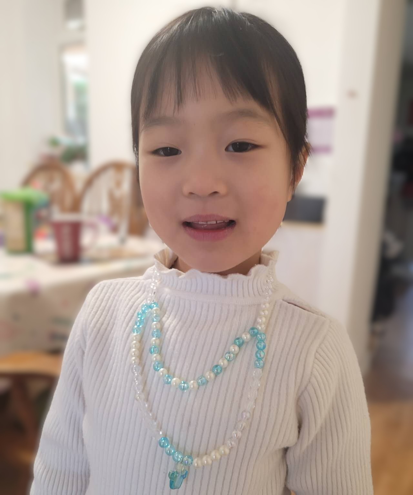

Our Team
Zutao Yu
Principal Investigator
- 2023.12 - Present | Senior Research Associate, University of Cambridge
- 2020.09 - 2023.11 | Research Associate, University of Cambridge
- 2018.10 - 2020.08 | Research Associate, Kyoto University
- 2015.10 - 2018.09 | Ph.D. in Chemical Biology, Kyoto University
- 2012.09 - 2015.06 | M. Med. in Medicinal Chemistry, Central South University
Dr. Zutao Yu leads the Yucleic Lab, specializing in nucleic acids chemical biology with a focus on DNA/RNA interactions and therapeutic development. His work bridges chemical biology and genomic medicine. He is interested in elucidating the roles of the epigenome and (epi-) transcriptome in both physiological and pathological conditions and developing strategies to manipulate them by targeting DNA and RNA. He uses advanced chemical biology techniques, such as drug-chromatin interaction detection, bifunctional molecules, in-situ on-target drug screening, and next-generation sequencing. His future research aims to innovate transcriptome- and genome-targeting strategies for modulating functional genomics in disease contexts like cancer, infectious diseases, and neurodegenerative disorders.

Mindy
Lab Energizer & Future Scientist
Our youngest team member brings infectious enthusiasm to the lab. Mindy participates in science outreach programs and aims to become a pioneering researcher in genomic medicine.
Postdoctoral Researchers
- Jane Smith
- Alex Brown
Graduate Students
- Emily Davis
- Michael Lee
Undergraduate Students
- Sarah Johnson
- David Wilson